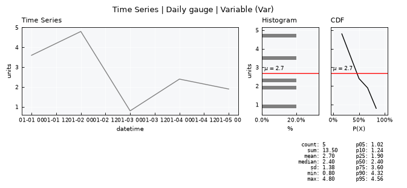
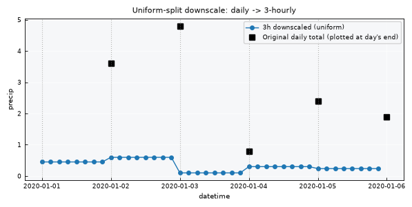
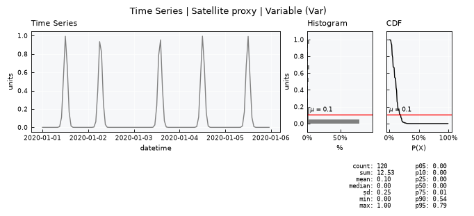
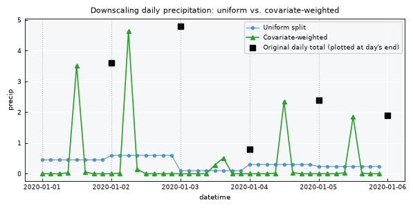
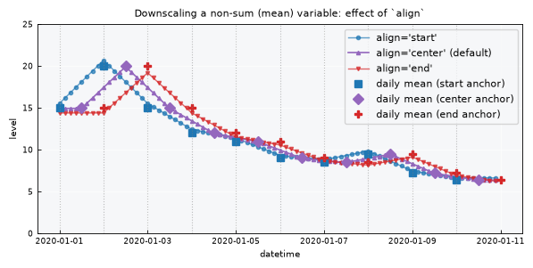

Time Series - Downscaling#
Downscaling is the opposite of upscaling: going from a coarser time step to a finer one. .scale_down() handles this differently depending on the series’ agg attribute:
For non-sum variables (
aggis"mean","max","min", …), it’s plain linear interpolation between the original points.For sum variables (
agg == "sum", e.g. daily precipitation totals), each source period’s total must be conserved: the finer sub-steps within a day have to add back up to exactly that day’s original total. Naive linear interpolation doesn’t guarantee this – it can blend values across day boundaries.
This tutorial covers the "sum" case specifically, since it’s the more interesting one:
Uniform split (the default): each day’s total spread evenly across its sub-daily steps.
Covariate-weighted: each day’s total shaped by a higher-resolution proxy signal (e.g. hourly satellite precipitation estimates), so the sub-daily pattern comes from the covariate while the sub-daily total still matches the original daily gauge value exactly.
Both are visualized with markers so the sub-daily steps are clearly distinguishable from the original daily values.
Like .scale_up(), .scale_down() takes an inplace parameter (default False): with inplace=False it returns a new TimeSeries object – an exact copy of the parent holding the downscaled data – rather than a bare DataFrame; with inplace=True it overwrites the current object’s data and returns None.
Notebook setup#
For users running this tutorial as a Jupyter Notebook, this cell must be executed first:
import sys
from pathlib import Path
import numpy as np
import pandas as pd
import matplotlib.pyplot as plt
# Install `plans` in `google.colab`.
# Use `pip install plans` for other environments.
if "google.colab" in sys.modules:
import os
os.system(f"{sys.executable} -m pip install -q plans")
# This avoids warnings related to uninstalled fonts
import logging
logging.getLogger('matplotlib.font_manager').setLevel(logging.ERROR)
# Ensure figures render inline
%matplotlib inline
# define output folder
OUTPUT_DIR = Path("outputs/time-series")
OUTPUT_DIR.mkdir(parents=True, exist_ok=True)
print(f"Outputs will be saved to: ./{OUTPUT_DIR}")
RNG_SEED = 2
np.random.seed(RNG_SEED)
Outputs will be saved to: ./outputs/time-series
Create a small daily precipitation series#
A tiny, deliberately small dataset (5 days) so every individual downscaled point is easy to see on a plot.
from plans.datasets import TimeSeries
dates = pd.date_range("2020-01-01", periods=5, freq="D")
daily_totals = [3.6, 4.8, 0.8, 2.4, 1.9]
df_daily = pd.DataFrame({"datetime": dates, "precip": daily_totals})
file_daily = OUTPUT_DIR / "precip_daily.csv"
df_daily.to_csv(file_daily, sep=";", index=False)
ts_daily = TimeSeries(name="Daily gauge", alias="gauge")
ts_daily.load_data(
file_data=file_daily,
input_dtfield="datetime",
input_varfield="precip",
in_sep=";",
)
# precipitation is a flow/sum variable -- totals must be conserved on downscale
ts_daily.agg = "sum"
print(f"Daily totals: {daily_totals}")
print(f"Sum of all days: {sum(daily_totals)}")
ts_daily.view()
Daily totals: [3.6, 4.8, 0.8, 2.4, 1.9]
Sum of all days: 13.500000000000002

Downscale with uniform split (default)#
With no covariate argument, .scale_down() splits each day’s total evenly across its sub-daily steps.
v = ts_daily.varfield
ts_uniform = ts_daily.scale_down(freq="3h")
print(type(ts_uniform))
ts_uniform.data.head(10)
<class 'plans.datasets.core.TimeSeries'>
| datetime | v | |
|---|---|---|
| 0 | 2020-01-01 00:00:00 | 0.45 |
| 1 | 2020-01-01 03:00:00 | 0.45 |
| 2 | 2020-01-01 06:00:00 | 0.45 |
| 3 | 2020-01-01 09:00:00 | 0.45 |
| 4 | 2020-01-01 12:00:00 | 0.45 |
| 5 | 2020-01-01 15:00:00 | 0.45 |
| 6 | 2020-01-01 18:00:00 | 0.45 |
| 7 | 2020-01-01 21:00:00 | 0.45 |
| 8 | 2020-01-02 00:00:00 | 0.60 |
| 9 | 2020-01-02 03:00:00 | 0.60 |
Confirm each day’s downscaled sub-steps still add up to that day’s original total:
df_uniform = ts_uniform.data.copy()
df_uniform["day"] = df_uniform[ts_uniform.dtfield].dt.date
check = df_uniform.groupby("day")[v].sum().reset_index()
check["original"] = daily_totals
check
| day | v | original | |
|---|---|---|---|
| 0 | 2020-01-01 | 3.6 | 3.6 |
| 1 | 2020-01-02 | 4.8 | 4.8 |
| 2 | 2020-01-03 | 0.8 | 0.8 |
| 3 | 2020-01-04 | 2.4 | 2.4 |
| 4 | 2020-01-05 | 1.9 | 1.9 |
Visualizing: original daily totals as large markers, downscaled 3-hourly sub-steps as small markers on a connecting line. The daily-total marker is placed at the end of the day it represents, not the start – a day’s rainfall total is only fully known once the day is over, so plotting it at midnight (the day’s start timestamp used internally) would visually suggest the rain fell before it was recorded. Note the black squares sit above the blue line – they represent each day’s total, while the blue points are each day’s total divided into 8 equal 3-hourly shares, so individually they’re much smaller than the day’s total. Each day’s flat segment visually confirms the uniform split, and vertical guide lines mark the day boundaries:
fig, ax = plt.subplots(figsize=(6, 3))
ax.plot(
df_uniform["datetime"], df_uniform[v],
marker="o", markersize=4, linewidth=1, color="tab:blue",
label="3h downscaled (uniform)"
)
# plot the daily-total marker at the END of the day it represents,
# not its internal start-of-day timestamp -- purely a plotting choice,
# the underlying ts_daily.data timestamps are unchanged
one_day = pd.Timedelta(days=1)
ax.plot(
ts_daily.data[ts_daily.dtfield] + one_day, ts_daily.data[v],
marker="s", markersize=6, linestyle="None", color="black",
label="Original daily total (plotted at day's end)"
)
for d in ts_daily.data[ts_daily.dtfield]:
ax.axvline(d, color="gray", linestyle=":", linewidth=0.8, alpha=0.6)
ax.set_title("Uniform-split downscale: daily -> 3-hourly")
ax.set_xlabel("datetime")
ax.set_ylabel("precip")
ax.legend()
plt.tight_layout()
plt.show()

Note the discontinuity at each day boundary – the uniform split has no information about when within a day the rain actually fell, so it produces a flat, physically implausible step function. This is where a covariate helps.
Downscale with a covariate#
Now suppose we have a higher-resolution proxy signal – e.g. hourly satellite-derived precipitation intensity. It’s not a direct measurement (its own units and totals don’t need to match the gauge), but its shape over time tells us when, within each day, precipitation was more or less intense. For this example, each day has a single, brief rain pulse at a different hour – a simple, clearly visible case for seeing how the shape carries through to the downscaled output.
.scale_down(freq=..., covariate=ts_satellite) uses exactly that shape: within each day, sub-steps get a share of the day’s total proportional to the covariate’s value at that sub-step, so the sub-daily pattern comes from the covariate while the sub-daily total still matches the gauge exactly.
# synthetic hourly satellite-like signal: a single narrow rain pulse
# per day, at a randomized (but reproducible) hour, near-zero elsewhere
hourly_idx = pd.date_range("2020-01-01", "2020-01-06", freq="1h", inclusive="left")
n_days = len(daily_totals)
pulse_hours = np.random.uniform(6, 20, n_days) # each day's pulse falls between 06:00-20:00
pulse_width = 1.0 # hours -- narrower means a sharper, more concentrated pulse
hours_of_day = (hourly_idx.hour + hourly_idx.minute / 60).values
day_of = np.array([(t.normalize() - hourly_idx[0].normalize()).days for t in hourly_idx])
signal = np.zeros(len(hourly_idx))
for d in range(n_days):
mask = day_of == d
signal[mask] = np.exp(-0.5 * ((hours_of_day[mask] - pulse_hours[d]) / pulse_width) ** 2)
df_satellite = pd.DataFrame({"datetime": hourly_idx, "intensity": signal})
file_satellite = OUTPUT_DIR / "precip_satellite.csv"
df_satellite.to_csv(file_satellite, sep=";", index=False)
ts_satellite = TimeSeries(name="Satellite proxy", alias="sat")
ts_satellite.load_data(
file_data=file_satellite,
input_dtfield="datetime",
input_varfield="intensity",
in_sep=";",
)
print(f"Covariate rows: {len(ts_satellite.data)}, detected frequency: {ts_satellite.dtfreq}")
print(f"Pulse hour per day: {np.round(pulse_hours, 1).tolist()}")
ts_satellite.view()
Covariate rows: 120, detected frequency: h
Pulse hour per day: [12.1, 6.4, 13.7, 12.1, 11.9]

The gauge target is 3h, finer than the covariate’s own 1h; .scale_down() linearly interpolates the covariate onto the target grid internally before using it as weights – no separate resampling step is needed on the user’s side.
ts_covariate = ts_daily.scale_down(freq="3h", covariate=ts_satellite)
print(type(ts_covariate))
ts_covariate.data.head(10)
<class 'plans.datasets.core.TimeSeries'>
| datetime | v | |
|---|---|---|
| 0 | 2020-01-01 00:00:00 | 5.438341e-32 |
| 1 | 2020-01-01 03:00:00 | 3.557537e-18 |
| 2 | 2020-01-01 06:00:00 | 2.871985e-08 |
| 3 | 2020-01-01 09:00:00 | 2.861308e-02 |
| 4 | 2020-01-01 12:00:00 | 3.518007e+00 |
| 5 | 2020-01-01 15:00:00 | 5.337998e-02 |
| 6 | 2020-01-01 18:00:00 | 9.995621e-08 |
| 7 | 2020-01-01 21:00:00 | 2.309888e-17 |
| 8 | 2020-01-02 00:00:00 | 7.988420e-09 |
| 9 | 2020-01-02 03:00:00 | 1.731173e-02 |
Same conservation check as before – covariate-weighting still preserves each day’s original total exactly:
df_covariate = ts_covariate.data.copy()
df_covariate["day"] = df_covariate[ts_covariate.dtfield].dt.date
check_cov = df_covariate.groupby("day")[v].sum().reset_index()
check_cov["original"] = daily_totals
check_cov
| day | v | original | |
|---|---|---|---|
| 0 | 2020-01-01 | 3.6 | 3.6 |
| 1 | 2020-01-02 | 4.8 | 4.8 |
| 2 | 2020-01-03 | 0.8 | 0.8 |
| 3 | 2020-01-04 | 2.4 | 2.4 |
| 4 | 2020-01-05 | 1.9 | 1.9 |
A note on the return type: inplace#
Every call above used the default inplace=False, which is why ts_uniform and ts_covariate are full TimeSeries objects (not DataFrames) – notice .data was needed to get at the underlying table. Setting inplace=True instead overwrites the object’s own data and returns None:
ts_demo = TimeSeries(name="Demo", alias="demo")
ts_demo.load_data(
file_data=file_daily,
input_dtfield="datetime",
input_varfield="precip",
in_sep=";",
)
ts_demo.agg = "sum"
print(f"Rows before: {len(ts_demo.data)}")
return_value = ts_demo.scale_down(freq="3h", inplace=True)
print(f"Return value: {return_value!r}")
print(f"Rows after (same object, overwritten): {len(ts_demo.data)}")
Rows before: 5
Return value: None
Rows after (same object, overwritten): 40
Visualizing all three together: original daily totals, the uniform-split downscale, and the covariate-weighted downscale – note how the covariate version now has a plausible, physically-informed within-day shape instead of flat steps, while still returning to the same daily totals as the uniform version:
fig, ax = plt.subplots(figsize=(6, 3))
ax.plot(
df_uniform["datetime"], df_uniform[v],
marker="o", markersize=3, linewidth=1, color="tab:blue", alpha=0.6,
label="Uniform split"
)
ax.plot(
df_covariate["datetime"], df_covariate[v],
marker="^", markersize=4, linewidth=1.2, color="tab:green",
label="Covariate-weighted"
)
one_day = pd.Timedelta(days=1)
ax.plot(
ts_daily.data[ts_daily.dtfield] + one_day, ts_daily.data[v],
marker="s", markersize=6, linestyle="None", color="black",
label="Original daily total (plotted at day's end)"
)
for d in ts_daily.data[ts_daily.dtfield]:
ax.axvline(d, color="gray", linestyle=":", linewidth=0.8, alpha=0.6)
ax.set_title("Downscaling daily precipitation: uniform vs. covariate-weighted")
ax.set_xlabel("datetime")
ax.set_ylabel("precip")
ax.legend()
plt.tight_layout()
plt.show()

Downscaling a non-sum variable: water level#
Precipitation is a flow variable – its totals must be conserved. Something like a daily-average water level is different: it’s not additive, so there’s no “total” to preserve. For this case, .scale_down() takes a different approach:
Each coarse data point is repositioned in time according to the
alignparameter –"start","center"(default), or"end"– reflecting where that value is assumed to sit within the period it represents. A daily average, for instance, is more representative of midday than midnight, so"center"anchors it at12:00.The repositioned points are linearly interpolated onto the fine grid.
A single global multiplicative correction is applied so the downscaled series’ overall mean matches the original series’ overall mean – not each individual day’s mean, just the series as a whole. (An earlier design that tried to preserve each day’s mean exactly was tested and rejected – it produced wild oscillations with volatile data. See the aside below.)
dates_level = pd.date_range("2020-01-01", periods=10, freq="D")
daily_means = [15.0, 20.0, 15.0, 12.0, 11.0, 9.0, 8.5, 9.5, 7.2, 6.4]
df_level = pd.DataFrame({"datetime": dates_level, "level": daily_means})
file_level = OUTPUT_DIR / "level_daily.csv"
df_level.to_csv(file_level, sep=";", index=False)
ts_level = TimeSeries(name="Reservoir level", alias="lvl")
ts_level.load_data(
file_data=file_level,
input_dtfield="datetime",
input_varfield="level",
in_sep=";",
)
print(f"agg (default): {ts_level.agg!r}") # "mean" -- not "sum", so align/correction path applies
vl = ts_level.varfield
ts_center = ts_level.scale_down(freq="3h") # align="center" is the default
ts_start = ts_level.scale_down(freq="3h", align="start")
ts_end = ts_level.scale_down(freq="3h", align="end")
for name, out in (("center (default)", ts_center), ("start", ts_start), ("end", ts_end)):
print(f"align={name:<17} overall mean: {out.data[vl].mean():.6f} "
f"(original: {sum(daily_means) / len(daily_means):.6f})")
agg (default): 'mean'
align=center (default) overall mean: 11.360000 (original: 11.360000)
align=start overall mean: 11.360000 (original: 11.360000)
align=end overall mean: 11.360000 (original: 11.360000)
Visualizing all three align options together, with the original daily-mean markers placed at the timestamp each align option anchors them to – "start" at midnight, "center" at midday, "end" at the next midnight. Notice how each curve passes closer to its own markers, since those are exactly the points it interpolates through:
df_start = ts_start.data
df_center = ts_center.data
df_end = ts_end.data
fig, ax = plt.subplots(figsize=(6, 3))
ax.plot(df_start["datetime"], df_start[vl], marker="o", markersize=3,
linewidth=1, color="tab:blue", alpha=0.7, label="align='start'")
ax.plot(df_center["datetime"], df_center[vl], marker="^", markersize=3,
linewidth=1.2, color="tab:purple", label="align='center' (default)")
ax.plot(df_end["datetime"], df_end[vl], marker="v", markersize=3,
linewidth=1, color="tab:red", alpha=0.7, label="align='end'")
half_day = pd.Timedelta(hours=12)
one_day = pd.Timedelta(days=1)
ax.plot(ts_level.data[ts_level.dtfield], ts_level.data[vl],
marker="s", markersize=6, linestyle="None", color="tab:blue", label="daily mean (start anchor)")
ax.plot(ts_level.data[ts_level.dtfield] + half_day, ts_level.data[vl],
marker="D", markersize=6, linestyle="None", color="tab:purple", label="daily mean (center anchor)")
ax.plot(ts_level.data[ts_level.dtfield] + one_day, ts_level.data[vl],
marker="P", markersize=6, linestyle="None", color="tab:red", label="daily mean (end anchor)")
for d in ts_level.data[ts_level.dtfield]:
ax.axvline(d, color="gray", linestyle=":", linewidth=0.8, alpha=0.5)
ax.set_title("Downscaling a non-sum (mean) variable: effect of `align`")
ax.set_xlabel("datetime")
ax.set_ylabel("level")
ax.set_ylim(0, 25)
ax.legend(fontsize=8)
plt.tight_layout()
plt.show()

Aside: why not preserve each day’s mean exactly?#
It’s tempting to want a stricter guarantee – that each individual day’s sub-daily average, not just the whole series’, matches its reported daily mean. There’s a simple technique for this: place unknown boundary values $S_i$ between periods such that $(S_i + S_{i+1})/2$ equals each period’s mean exactly, then linearly interpolate between the $S_i$. This can be solved exactly (it’s a linear recurrence), but it’s dangerously unstable – a volatile sequence of daily means can force boundary values far outside the plausible range of the variable:
volatile_means = np.array([10.0, 40.0, 8.0, 35.0, 12.0])
S = np.empty(len(volatile_means) + 1)
S[0] = volatile_means[0]
for i, m in enumerate(volatile_means):
S[i + 1] = 2 * m - S[i]
print(f"Daily means: {volatile_means.tolist()}")
print(f"Boundary values: {np.round(S, 1).tolist()}")
print("Note the boundary values swing far outside the range of the original "
"data (even negative) -- this is why `.scale_down()` uses the simpler, "
"more stable whole-series mean correction instead.")
Daily means: [10.0, 40.0, 8.0, 35.0, 12.0]
Boundary values: [10.0, 10.0, 70.0, -54.0, 124.0, -100.0]
Note the boundary values swing far outside the range of the original data (even negative) -- this is why `.scale_down()` uses the simpler, more stable whole-series mean correction instead.
Any agg other than "sum" follows the same path#
The align/correction behavior isn’t specific to "mean" – it applies to any agg value that isn’t "sum", since the branch check is simply self.agg != "sum". Setting agg to something like "max" still runs without error, though it’s worth noting the correction always targets the mean regardless of what agg conceptually represents – there’s no attempt to conserve a maximum, since a maximum isn’t additive and can’t be redistributed the way a sum can:
ts_level.agg = "max" # arbitrary non-sum agg
ts_max_down = ts_level.scale_down(freq="6h")
print(type(ts_max_down))
ts_max_down.data.head(6)
<class 'plans.datasets.core.TimeSeries'>
| datetime | v | |
|---|---|---|
| 0 | 2020-01-01 00:00:00 | 14.859385 |
| 1 | 2020-01-01 06:00:00 | 14.859385 |
| 2 | 2020-01-01 12:00:00 | 14.859385 |
| 3 | 2020-01-01 18:00:00 | 16.097667 |
| 4 | 2020-01-02 00:00:00 | 17.335949 |
| 5 | 2020-01-02 06:00:00 | 18.574232 |
Recap#
.scale_down(freq)returns a newTimeSeriesobject by default (inplace=False); passinplace=Trueto overwrite the current object’s data instead and getNoneback.For a
"sum"-aggregated series,.scale_down(freq)uses uniform split by default: each source period’s total is spread evenly across its finer sub-steps, exactly preserving that period’s total..scale_down(freq, covariate=ts_other)shapes that distribution using a higher-resolution proxy series instead of splitting evenly – the covariate is auto-interpolated onto the target frequency if needed, and falls back to uniform weighting in any period where the covariate is entirely zero or missing.Both
"sum"modes exactly conserve each source period’s original total – verified directly by grouping the downscaled output back to the source resolution.For any
aggother than"sum"("mean","max","min", …),.scale_down(freq, align=...)repositions each coarse point peralign("start","center"default, or"end"), linearly interpolates, then applies a single global correction so the downscaled series’ overall mean matches the original – not each individual period’s mean, which turned out to be an unstable guarantee to chase exactly.